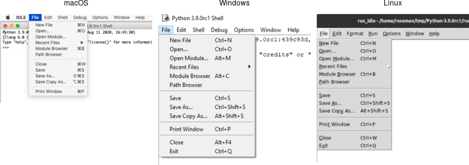

In this section, we'll look at menubars: how to create them, what goes in them, how they're used, etc.
Properly designing a menubar and its set of menus is beyond the scope of this tutorial. However, if you're creating an application for someone other than yourself, here is a bit of advice. First, if you find yourself with many menus, very long menus, or deeply nested menus, you may need to rethink how your user interface is organized. Second, many people use the menus to explore what the program can do, particularly when they're first learning it, so try to ensure major features are accessible by the menus. Finally, for each platform you're targeting, become familiar with how applications use menus, and consult the platform's human interface guidelines for full details about design, terminology, shortcuts, and much more. This is an area you will likely have to customize for each platform.

Menubars.
Menus are implemented as widgets in Tk, just like buttons and entries. Each menu widget consists of a number of different items in the menu. Items have various attributes, such as the text to display for the item, a keyboard accelerator, and a command to invoke.
Menus are arranged in a hierarchy. The menubar is itself a menu widget. It has several items ("File," "Edit," etc.), each of which is a submenu containing more items. These items can include things like the "Open..." command in a "File" menu, but also separators between other items. It can even have items that open up their own submenu (so-called cascading menus). As you'd expect from other things you've seen already in Tk, anytime you have a submenu, it must be created as a child of its parent menu.
Menus are part of the classic Tk widgets; there is not presently a menu in the themed Tk widget set.
It's essential to put the following line in your application somewhere before you start creating menus.
root.option_add('*tearOff', FALSE)Without it, each of your menus (on Windows and X11) will start with what looks like a dashed line and allows you to "tear off" the menu, so it appears in its own window. You should eliminate tear-off menus from your application as they're not a part of any modern user interface style.
This is a throw-back to the Motif-style X11 that Tk's original look and feel were based on. Get rid of them unless your application is designed to run only on that old box collecting dust in the basement. We'll all look forward to a future version of Tk where this misguided paean to backward compatibility is removed.
While on the topic of ancient history, the option_add bit uses the option database.
On X11 systems, this provided a standardized way to customize certain elements of user interfaces through text-based
configuration files. It's no longer used today. Older Tk programs may use the option command internally to
separate style configuration options from widget creation code. This all pre-dated themed Tk styles, which should be used
for that purpose today. However, it's somehow fitting to use the obsolete option database to automatically remove the obsolete tear-off menus.
In Tk, menubars are associated with individual windows; each toplevel window can have at most one menubar. On Windows and many X11 window managers, this is visually obvious, as the menus are part of each window, sitting just below the title bar at the top.
On macOS, though, there is a single menubar along the top of the screen, shared by each window. As far as your Tk program is concerned, each window still does have its own menubar. As you switch between windows, Tk ensures that the correct menubar is displayed. If you don't specify a menubar for a particular window, Tk will use the menubar associated with the root window; you'll have noticed by now that this is automatically created for you when your Tk application starts.
Because all windows have a menubar on macOS, it's important to define one, either for each window or a fallback menubar for the root window. Otherwise, you'll end up with the "built-in" menubar, which contains menus that are only intended for typing commands directly into the interpreter.
To create a menubar for a window, first, create a menu widget. Then, use the
window's menu configuration option to attach the menu widget to the window.
win = Toplevel(root) menubar = Menu(win) win['menu'] = menubar
You can use the same menubar for more than one window.
In other words, you can specify the same menubar as the menu configuration option for several toplevel windows.
This is particularly useful on Windows and X11, where you may want a window
to include a menu, but don't necessarily need to juggle different menus in
your application. However, if the contents or state of menu items
depends on what's going on in the active window, you'll have to manage this yourself.
We now have a menubar, but that's pretty useless without some menus to go in it. So again, we'll create a menu widget for each menu, each one a child of the menubar. We'll then add them all to the menubar.
menubar = Menu(parent) menu_file = Menu(menubar) menu_edit = Menu(menubar) menubar.add_cascade(menu=menu_file, label='File') menubar.add_cascade(menu=menu_edit, label='Edit')
The add_cascade method adds a menu item, which itself is a menu (a submenu).
Now that we have a couple of menus in our menubar, we can add a few items to each menu.
Regular menu items are called command items in Tk. We'll see some other types of menu items shortly.
Notice that menu items are part of the menu itself; we don't have to create a separate menu widget for each one (submenus being the exception).
menu_file = Menu(menubarmenu_file.add_command(label='New', command=newFile) menu_file.add_command(label='Open...', command=openFile) menu_file.add_command(label='Close', command=closeFile)
Each menu item has associated with it several configuration options, analogous to widget configuration options.
Each type of menu item has a different set of available options. Cascade
menu items have a menu option used to specify the submenu, command menu items
have a command option to specify the command to invoke when the item is
chosen. Both have a label option to specify the text to display for the item.
We've already seen cascade menu items used to add a menu to a menubar.
Not surprisingly, if you want to add a submenu to an existing menu, you also use a
cascade menu item in exactly the same way. You might use this to build
build a "recent files" submenu, for example.
menu_recent = Menu(menu_file)
menu_file.add_cascade(menu=menu_recent, label='Open Recent')
for f in recent_files:
menu_recent.add_command(label=os.path.basename(f), command=lambda: openFile(f))
A third type of menu item is the separator, which produces the dividing line
you often see between different menu items.
menu_file.add_separator()
Finally, there are also checkbutton and radiobutton menu items
that behave analogously to checkbutton and radiobutton widgets. These menu items
have a variable associated with them. Depending on its value,
an indicator (i.e., checkmark or selected radiobutton) may be shown next to its label.
check = StringVar() menu_file.add_checkbutton(label='Check', variable=check, onvalue=1, offvalue=0) radio = StringVar() menu_file.add_radiobutton(label='One', variable=radio, value=1) menu_file.add_radiobutton(label='Two', variable=radio, value=2)
When a user selects a checkbutton item that is not already checked, it sets the
associated variable to the value in onvalue. Selecting an item that
is already checked sets it to the value in offvalue. Selecting a radiobutton
item sets the associated variable to the value in value. Both types of items
also react to any changes you make to the associated variable.
Like command items, checkbutton and radiobutton menu items support a command
configuration option that is invoked when the menu item is chosen. The associated
variable and the menu item's state are updated before the callback is invoked.
Radiobutton menu items are not part of the Windows or macOS human interface guidelines. On those platforms, the item's indicator is a checkmark, as it would be for a checkbutton item. The semantics still work. It's a good way to select between multiple items since it will show one of them selected (checked).
As well as adding items to the end of menus, you can also insert them in the middle of menus
via the insert index type ?option value...? method; here
index is the position (0..n-1) of the item you want to insert before.
You can also delete one or more menu items susing the delete index ?endidx? method.
menu_recent.delete(0, 'end')
Like most everything in Tk, you can look at or change the value of an item's options at any time.
Items are referred to via an index. Usually, this is a number (0..n-1) indicating the
item's position in the menu. You can also specify the label of the menu item (or, in fact, a
"glob-style" pattern to match against the item's label).
print( menu_file.entrycget(0, 'label')) # get label of top entry in menu print( menu_file.entryconfigure(0)) # show all options for an item
You can disable a menu item so that users cannot select it. This can be done
via the state option, setting it to the value disabled. Use a value
of normal to re-enable the item.
Menus should always reflect the current state of your application. If a menu item is not presently relevant (e.g., the "Copy" item is only applicable if something in your application is selected), you should disable it. When your application state changes so that the item is applicable, make sure to enable it.
menu_file.entryconfigure('Close', state=DISABLED)Sometimes you may have menu items whose name changes in response to application state changes, rather than the menu item being disabled. For example, A web browser might have a menu item that changes between "Show Bookmarks" and "Hide Bookmarks" as a bookmarks pane is hidden or displayed.
menu_bookmarks.entryconfigure(3, label="Hide Bookmarks")
As your program grows complex, it's easy to miss enabling or disabling some items. One strategy is to centralize all the menu state changes in one routine. Whenever there is a state change in your application, it should call this routine. It will examine the current state and update menus accordingly. The same code can also handle toolbars, status bars, or other user interface components.
The accelerator option is used to indicate a keyboard equivalent that corresponds to a menu item.
This does not actually create the accelerator, but only displays it next to the menu item.
You still need to create an event binding for the accelerator yourself.
Remember that event bindings can be set on individual widgets, all widgets of a certain type, the toplevel window containing the widget you're interested in, or the application as a whole. As menu bars are associated with individual windows, the event bindings you create will usually be on the toplevel window the menu is associated with.
Accelerators are very platform-specific, not only in terms of which keys are used for
what operation, but what modifier keys are used for menu accelerators (e.g., on macOS,
it is the "Command" key, on Windows and X11, it is usually the "Control" key).
Examples of valid accelerator options are Command-N, Shift+Ctrl+X, and
Command-Option-B. Commonly used modifiers include Control, Ctrl, Option,
Opt, Alt, Shift, "Command, Cmd, and Meta.
m_edit.entryconfigure('Paste', accelerator='Command+V')All platforms support keyboard traversal of the menubar via the arrow keys. On Windows
and X11, you can also use other keys to jump to particular menus or menu items. The keys
that trigger these jumps are indicated by an underlined letter in the menu item's label.
To add one of these to a menu item, use the underline
configuration option for the item. Its value should be the index of the
character you'd like underlined (from 0 to the length of the string - 1). Unlike with
accelerator keys, the menu will watch for the keystroke, so no separate event binding is needed.
m.add_command(label='Path Browser', underline=5) # underline "B"
It is also possible to use images in menu items, either beside the menu item's label, or
replacing it altogether. To do this, use the image and compound
options, which work just like in label widgets. The value for image must be
a Tk image object, while compound can have the values bottom,
center, left, right, top, or none.
Platform conventions for menus suggest standard menus and items that should be available in most applications.
For example, most applications have an "Edit" menu, with menu items for "Copy," "Paste," etc. Tk widgets like
entry or text will react appropriately when those menu items are chosen. But if you're building your own menus,
how do you make that work? What command would you assign to a "Copy" menu item?
Tk handles this with virtual events. As you'll recall from the Tk Concepts chapter, these are high-level application events, as opposed to low-level operating system events. Tk's widgets will watch for specific events. When you build your menus, you can generate those events rather than directly invoking a callback function. Your application can create event bindings to watch for those events too.
Some developers create virtual events for every item in their menus. They generate those events instead of calling routines in their own code directly. It's one way of splitting off your user interface code from the rest of your application. Remember that even if you do this, you'll still need code that enables and disables menu items, adjusts their labels, etc. in response to application state changes.
Here's a minimal example showing how we'd add two items to an "Edit" menu, the standard "Paste" item, and an application-specific "Find..." item that will open a dialog to find or search for something. We'll include an entry widget so that we can check that "Paste" works.
from tkinter import *
from tkinter import ttk, messagebox
root = Tk()
ttk.Entry(root).grid()
m = Menu(root)
m_edit = Menu(m)
m.add_cascade(menu=m_edit, label="Edit")
m_edit.add_command(label="Paste", command=lambda: root.focus_get().event_generate("<<Paste>>"))
m_edit.add_command(label="Find...", command=lambda: root.event_generate("<<OpenFindDialog>>"))
root['menu'] = m
def launchFindDialog(*args):
messagebox.showinfo(message="I hope you find what you're looking for!")
root.bind("<<OpenFindDialog>>", launchFindDialog)
root.mainloop()
When you generate a virtual event, you need to specify the widget that the event should be sent to.
We want the "Paste" event to be sent to the widget with the keyboard focus (usually indicated by a focus ring).
You can determine which widget has the keyboard focus using the focus command. Try it out, choosing
the Paste item when the window is first opened (when there's no focus) and after clicking on the entry (making it the focus).
Notice the entry handles the <<Paste>> event itself. There's no need for us to create an event binding.
The <<OpenFindDialog>> event is sent to the root window, which is where we create an event binding.
If we had multiple toplevel windows, we'd send it to a specific window.
Tk predefines the following virtual events: <<Clear>>, <<Copy>>,
<<Cut>>, <<Paste>>, <<PasteSelection>>,
<<PrevWindow>>, <<Redo>>, and <<Undo>>.
For additional information, see the event command reference.
Contextual menus ("popup" menus) are typically invoked by a right mouse button click on an object in the application. A menu pops up at the location of the mouse cursor. Users can then select an items from the menu (or click outside it to dismiss it without choosing any item).
To create a contextual menu, we'll use exactly the same commands we did to create menus in the menubar. Typically, we'd create one menu with several command items in it, and potentially some cascade menu items and their associated menus.
To activate the menu, users will perform a contextual menu click. We'll have to create an event binding to capture that click. That, however, can mean different things on different platforms. On Windows and X11, this is the right mouse button being clicked (the third mouse button). On macOS, this is either a click of the left (or only) button with the control key held down or a right-click on a multi-button mouse. Unlike Windows and X11, macOS refers to this as the second mouse button, not the third, so that's the event we'll see in our program.
Besides capturing the correct contextual menu event, we also need to capture the mouse's location.
It turns out we need to do this relative to the entire screen (global coordinates) and not local to the window or
widget you clicked on (local coordinates). The %X and %Y substitutions in Tk's event binding system will capture
those for us.
The last step is simply to tell the menu to pop up at the particular location, via the post method.
Here's an example of the whole process, using a popup menu on the application's main window.
from tkinter import *
root = Tk()
menu = Menu(root)
for i in ('One', 'Two', 'Three'):
menu.add_command(label=i)
if (root.tk.call('tk', 'windowingsystem')=='aqua'):
root.bind('<2>', lambda e: menu.post(e.x_root, e.y_root))
root.bind('<Control-1>', lambda e: menu.post(e.x_root, e.y_root))
else:
root.bind('<3>', lambda e: menu.post(e.x_root, e.y_root))
root.mainloop()